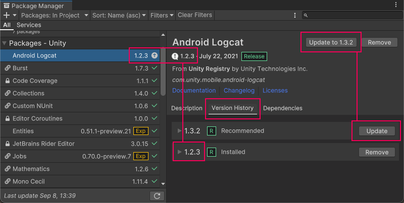

Use the information on this page to update UPM packagesA Package managed by the Unity Package Manager. Refer to Packages. See in Glossary that were installed from the Unity Registry or a scoped registry, or from a local source. The information on this page also applies to packages you installed from the Asset StoreA growing library of free and commercial assets created by Unity and members of the community. Offers a wide variety of assets, from textures, models and animations to whole project examples, tutorials and Editor extensions. More info See in Glossary, if they’re in the UPM format.
If you want to install a specific version of a package, install the package by name and follow its optional step to specify a version.
If you want to update packages that were installed from a Git URL, you can use any of the following methods:
Locate the package in the Package Manager, select it, then click the Update button.
Reinstall it as a Git dependency using a new revision. For more information about how to specify revisions with Git dependenciesThe Package Manager retrieves Git dependencies from a Git repository directly rather than from a package registry. Git dependencies use a Git URL reference instead of a version, and there’s no guarantee about the package quality, stability, validity, or even whether the version stated in its package.json file respects Semantic Versioning rules with regards to officially published releases of this package. More info See in Glossary, see Targeting a specific revision.
Reinstall it from the Unity Registry.
To update a package while in the In Project, Unity Registry, or My Registries context:
Open the Package Manager window and select In Project from the PackagesPackages are collections of assets to be shared and re-used in Unity. The Unity Package Manager (UPM) can display, add, and remove packages from your project. These packages are native to the Unity Package Manager and provide a fundamental method of delivering Unity functionality. However, the Unity Package Manager can also display Asset Store packages that you downloaded from the Asset Store. More info See in Glossary menu.
Switch the context to In Project
An arrow icon () appears next to any packages that have updates available.
Select the installed package you want to update from the list of packages. The package information appears in the details view.
The lock icon () indicates that this package and version is locked to an installed feature setA feature set is a collection of related packages that you can use to achieve specific results in the Unity Editor. You can manage feature sets directly in Unity’s Package Manager. More info See in Glossary. To unlock the package and select another version, click the Unlock button.
Note: The package is temporarily unlocked. If you change to a different list context, or close either the Package Manager or the Editor, the package reverts to a locked state again. However, if you switch versions when the package is unlocked (for example, with the Install a package from a registry by name method), the package stays unlocked.
In the details view, select the Version History tab. If multiple versions are available, expand the entries to see information specific to each version.

Version numbers for installed packages display in multiple places and the recommended version appears on the Update to button
Click the Update to button, or click the Update button beside the version listed in the Version History tab.
When the progress bar finishes, any new functionality is immediately available.
Notes:
If you switch to an older version of a package, you might have to run the API Updater on the package contents.

 ) indicates that this package and version is locked to an installed feature setA feature set is a collection of related packages that you can use to achieve specific results in the Unity Editor. You can manage feature sets directly in Unity’s Package Manager. More info
) indicates that this package and version is locked to an installed feature setA feature set is a collection of related packages that you can use to achieve specific results in the Unity Editor. You can manage feature sets directly in Unity’s Package Manager. More info